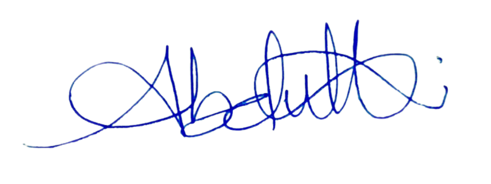

Mesurer avant d'optimiser
Latence, précision, consommation : sur l'edge, chaque milliseconde et chaque watt comptent. Je profile d'abord, j'optimise ensuite — distillation et TensorRT au service de chiffres mesurés.
À propos
Je suis Atanda Abdullahi — ingénieur Vision par Ordinateur & Edge-AI. Pendant dix ans, j'ai construit, sécurisé et dépanné des systèmes informatiques. Aujourd'hui, je transpose cette rigueur de terrain dans le deep learning et la robotique, là où la recherche rencontre le matériel réel.
Disponible pour un entretien
10 ans
IT / infrastructure
M2
Vision par Ordinateur
+25 %
détection (ViT)
−40 %
inférence sur Jetson
01 — Récit
Une trajectoire continue : du câble réseau au tenseur, du ticket de support au modèle déployé.
Pendant près de dix ans à Radio Nigeria (Lagos), j'ai été responsable informatique : administration d'Active Directory — utilisateurs, sécurité, déploiements — gestion des réseaux et dépannage avec un fort taux de satisfaction. J'y ai aussi conçu un site web optimisé pour le SEO, qui a porté l'engagement à +20 %. Cette décennie m'a appris une chose : un système ne vaut que par sa fiabilité une fois mis entre les mains des utilisateurs.
J'ai ensuite choisi de plonger dans le deep learning et la vision par ordinateur, en obtenant un Master (M2) Vision par Ordinateur à l'Université de Bourgogne. Chez WASORIA, j'ai appliqué la distillation de connaissances à des Vision Transformers lourds : +25 % de vitesse de détection et de précision de segmentation, et −40 % de temps d'inférence sur un Nvidia Jetson Orin Nano 8 Go.
Aujourd'hui, je travaille à la frontière de la recherche et de la robotique embarquée — comme avec ROSBot Harmony, un système autonome de communication inter-robots. Mon objectif reste constant : faire passer un modèle du papier au matériel, sans perdre ni la précision, ni la robustesse.
02 — Savoir-être
Itérer vite, en confiance, avec une équipe alignée sur l'objectif.
Traduire la complexité en décisions compréhensibles par tous.
Garder le cap et la lucidité quand les délais se resserrent.
Décomposer, diagnostiquer, et résoudre jusqu'à la cause racine.
Passer du support N3 à la recherche en vision sans perdre le fil.
« De la salle serveur au tenseur. »
03 — Langues
Anglophone natif, je progresse en français au quotidien dans un environnement professionnel francophone.
04 — Méthode
Trois principes qui relient la recherche en deep learning au matériel réellement déployé.
Latence, précision, consommation : sur l'edge, chaque milliseconde et chaque watt comptent. Je profile d'abord, j'optimise ensuite — distillation et TensorRT au service de chiffres mesurés.
Un modèle n'existe vraiment qu'une fois embarqué. Mes dix ans d'infrastructure m'ont appris à concevoir pour la cible — Jetson, robot, terrain — pas seulement pour le notebook.
Du support IT à la robotique, j'écris ce qui doit être reproductible. Une solution claire et documentée vaut mieux qu'une astuce brillante mais opaque.

Atanda Abdullahi
ATANDA ABDULLAHI · WALEDROID
La suite
Explorez mon parcours professionnel en détail, ou prenons directement contact pour en discuter.